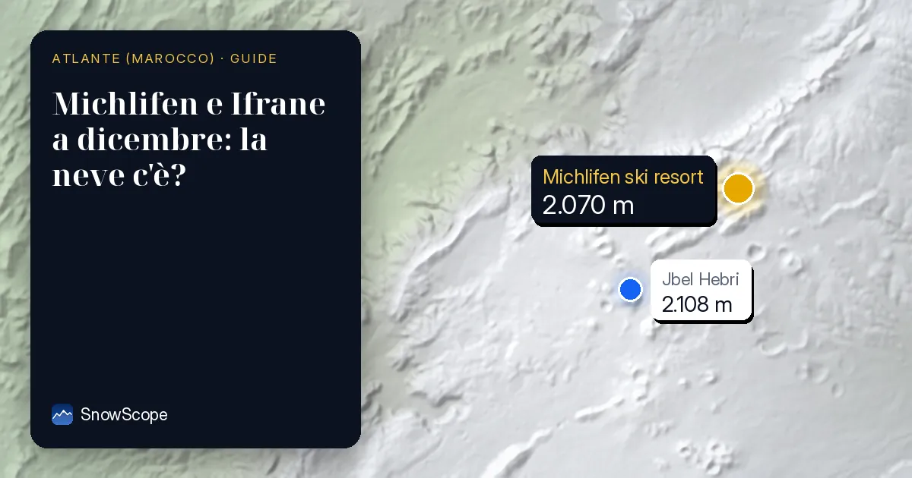

Michlifen e Ifrane a dicembre: la neve c'è?
In 46 inverni di registrazioni, Michlifen a metà dicembre di solito non ha neve da sci. Solo in anni rari la neve rimane al suolo abbastanza a lungo da contare. Questo è un comprensorio per chi insegue le tempeste, non per chi pianifica una settimana in anticipo.
Le previsioni neve in tempo reale per Michlifen ski resort nell'app SnowScopeAltezza neve, allerte powder e mappa 3D, gratis.
Perché Michlifen fatica a dicembre
Michlifen si trova nell'Atlante Medio del Marocco a bassa quota per un'area sciistica: la base è a 1.870 m, la mezza montagna a 1.970 m e la vetta a 2.070 m. A soli 13 km di distanza, Ifrane spesso si copre di neve pittoresca, ma i pendii di Michlifen raccontano una storia diversa. Le montagne qui ricevono neve spesso ma la perdono velocemente per lo scioglimento e il vento.
L'altitudine conta meno nell'Atlante che negli Alpi europee. Quello che conta di più è il tempismo: quando cade la neve e quanto velocemente il sole la consuma. A dicembre, il sole è basso ma ancora abbastanza forte da spazzare via un manto sottile in pochi giorni.

Il quadro di dicembre a tre quote
A mezza montagna (1.970 m), il 15 dicembre mostra 0 cm in un inverno tipico. Anche in un dicembre generoso—uno inverno su dieci—si ottengono solo 5 cm. Entro il 31 dicembre, un inverno tipico rimane ancora a 0 cm, anche se un grande dicembre raggiunge 17 cm. La parte triste: l'83% degli inverni rimane quasi privo di neve (sotto 5 cm) a Capodanno.
Il quadro è peggiore alla base e simile in vetta. La prima neve duratura di solito arriva intorno al 14 dicembre, ma la parola 'duratura' è generosa: un dicembre tipico porta solo 24 giorni con neve al suolo. Molti di quei giorni arrivano in brevi raffiche tra i periodi di scioglimento.

Quando la buona neve arriva davvero
Entro il 25 dicembre 2025, la mezza montagna conteneva 50 cm—abbastanza per sciare. La stagione ha raggiunto un picco di 51 cm in 48 giorni di neve. Jbel Hebri vicino ha ricevuto anche 48 cm il 25 dicembre, anche se un inverno tipico conta solo 20 giorni di neve.
Questi inverni sono l'eccezione. Quando arrivano, arrivano all'improvviso: un sistema di tempesta si piazza sull'Atlante, scarica neve pesante e la base cresce in fretta. Poi il tempo si sposta. La differenza tra un dicembre nudo e uno sciabile spesso dipende dall'arrivo di una sola tempesta.
Michlifen contro le quote più alte
Oukaïmeden, situato molto più in alto nello stesso massiccio, è più sicuro per una visita a dicembre. A mezza montagna (2.929 m), un tipico 15 dicembre offre 16 cm, e il 43% degli inverni ha almeno 25 cm entro allora. La mezza montagna di Michlifen alla stessa data è 0 cm, con solo il 2% degli inverni che raggiunge 25 cm.
Anche Oukaïmeden è una scommessa a dicembre. Ma le probabilità si inclinano abbastanza che se devi sciare a inizio stagione, il comprensorio più alto è la scelta più intelligente. Michlifen ha senso solo se puoi muoverti velocemente dopo una nevicata fresca.
Cosa insegnano gli ultimi 46 inverni
I dati si estendono dal 1980-81 al 2025-26 e non mostrano alcun cambiamento a lungo termine. Il peggior dicembre mai registrato ha portato 9 cm di neve di picco a mezza montagna. Il migliore ha portato 80 cm. La mediana si attesta a 31 cm, ma questo numero nasconde la verità: la maggior parte degli anni è magra, pochi anni sono profondi, e dicembre è diviso tra loro.
Inizio dicembre (prima del 15 dicembre) è più magro di fine dicembre. Entro il 25 dicembre, gli anni buoni diventano più comuni. Entro il 31 dicembre, le probabilità di avere 25 cm o più sono salite al 7%. Se hai flessibilità, aspettare fino a fine dicembre o inizio gennaio è meglio che prenotare presto.
Come usare questo comprensorio in inverno
La vera forza di Michlifen arriva dopo le prime grandi tempeste di gennaio o febbraio. È allora che la base si forma e regge. Se vuoi visitare a dicembre, trattalo come un bonus: guarda il meteo, vedi formarsi un sistema di tempesta, e vai entro due o tre giorni da neve pesante. Porta pneumatici invernali e controlla le condizioni della strada prima di partire.
Per l'esperienza cartolina di Ifrane, uno o due giorni dopo una tempesta di solito consegna. La neve è fresca, la città è bianca, e l'Atlante mostra sé stesso al suo meglio. Ma contare su questo a dicembre è pensiero magico. Pianifica da gennaio in poi, o insegui le tempeste nel previsioni.
Consigli per sciatori
- Guarda le previsioni per le tempeste, non il calendario. Una visita a dicembre funziona solo se la neve cade entro la tua finestra di viaggio. Parti entro 48 ore da neve pesante per catturare la migliore copertura.
- Dicembre a Michlifen è sci raro. Se la base mostra terreno nudo o copertura sottile sulla nostra mappa, non prenotare. Se vedi neve fresca, muoviti velocemente.
- Le strade dell'Atlante Medio ghiacciano facilmente dopo nevicate, specialmente all'alba. Porta pneumatici invernali e controlla le condizioni prima di salire in montagna.
- Per un certo viaggio a dicembre, considera invece Oukaïmeden. La neve a metà dicembre lì è più probabile, anche se ancora non garantita.
- Gennaio e febbraio sono più affidabili. Pianifica il tuo viaggio principale allora, e tratta una nevicata a dicembre come una fortunata occasione, non una promessa.
Su questi numeri
Le altezze neve delle località sono la neve più alta sui pendii superiori alla data indicata; sono stime per un'area, non una misura in un punto. Le previsioni possono cambiare. Leggi sempre il bollettino valanghe ufficiale prima del fuoripista.
Cita questo articolo
Per ricerca, didattica o stampa: numeri e grafici sono liberamente riutilizzabili con licenza CC BY 4.0 citando così.
SnowScope (2026), Michlifen e Ifrane a dicembre: la neve c'è?, https://snowscope.app/blog/it/2026/11/michlifen-ifrane-neige-decembre-moyen-atlas.html, consultato il 2026-11-14
SnowScope (Atlas Labs). (2026, November 14). Michlifen e Ifrane a dicembre: la neve c'è?. SnowScope snow reports. https://snowscope.app/blog/it/2026/11/michlifen-ifrane-neige-decembre-moyen-atlas.html
BibTeX
@misc{snowscope2026michlifenifraneneigedece,
author = {{SnowScope (Atlas Labs)}},
title = {Michlifen e Ifrane a dicembre: la neve c'è?},
year = {2026},
month = nov,
howpublished = {\url{https://snowscope.app/blog/it/2026/11/michlifen-ifrane-neige-decembre-moyen-atlas.html}},
note = {Published 2026-11-14 13:29 UTC; accessed 2026-11-14}
}· CC BY 4.0 · Metodi, dati e strumenti →
Michlifen ski resort: neve e temperatura per quota, quest'inverno vs lo scorso (strumenti) →
Segui Michlifen ski resort
Gratis: un messaggio quando arriva la neve e il meteo ogni mattina.